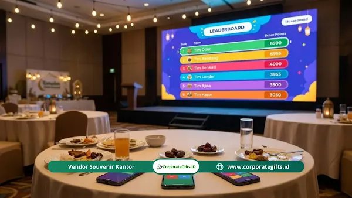

Corporate Gifts ID - Doorprize bukber perusahaan paling efektif adalah hadiah yang benar-benar terpakai sehari-hari, seperti voucher jasa pembersih rumah, sembako premium toples kaca, aksesori meja ergonomis, bantal selimut travel portabel, headphone peredam bising, dan paket ibadah ringkas. Mengundi hadiah lewat kuis digital setelah berbuka puasa dan santap malam bersama membuat acara buka bersama (bukber) kantor terasa meriah, adil, dan penuh kehangatan.
Selama ini anggaran bukber perusahaan kerap habis terkuras untuk sewa venue restoran dan paket konsumsi buffet mewah, sementara momen penyerahan hadiah yang seharusnya menjadi puncak acara justru terasa garing dan monoton. Padahal, jika dikonsep dengan matang oleh tim HRD, doorprize bukber adalah instrumen penguat ikatan emosional (employee engagement) dan apresiasi nyata atas dedikasi kerja karyawan sepanjang kuartal pertama.
Poin Kunci Pengadaan Doorprize Bukber:
- Relevansi Kebutuhan Riil: Pilih hadiah yang mempermudah rutinitas Ramadan dan persiapan mudik Lebaran karyawan modern.
- Dukungan Work-Life Balance: Barang-barang penunjang kenyamanan fisik (seperti dudukan laptop dan headphone) terbukti paling diminati staf muda.
- Kemasan Berkelanjutan: Menggunakan kotak rotan atau besek kayu ramah lingkungan meningkatkan perceived value tanpa mencemari lingkungan.
- Undian Interaktif Berbasis Gadget: Menghilangkan sistem nomor sobekan kertas kuno dan beralih ke kuis proyektor digital demi transparansi mutlak.
Mengapa Doorprize Bukber Perusahaan Penting bagi Karyawan?
Doorprize bukber perusahaan memegang peranan krusial karena menjadi bentuk pengakuan langsung yang menyentuh ranah personal staf. Di tengah beban kerja operasional yang menantang selama menjalankan ibadah puasa, kejutan hadiah kantor menghidupkan kembali motivasi kerja dan mempererat hubungan horizontal antar divisi.
1. Hadiah sebagai Bentuk Apresiasi dan Retensi Talenta
Hadiah yang bernilai guna tinggi membuat karyawan merasa dipedulikan secara tulus oleh jajaran manajemen. Karyawan yang merasa dihargai memiliki tingkat loyalitas yang jauh lebih kokoh, sehingga meminimalkan potensi turnover talenta pasca pembagian Tunjangan Hari Raya (THR).
2. Relevan dengan Gaya Hidup Kaum Urban
Ritme kehidupan pekerja kota metropolitan yang serba cepat menuntut barang-barang yang ringkas dan solutif. Alih-alih memberikan perkakas rumah tangga berukuran raksasa yang menyulitkan saat dibawa pulang menggunakan transportasi umum, karyawan masa kini jauh lebih mendambakan doorprize pendukung work life balance yang fleksibel.
6 Ide Doorprize Bukber Kantor yang Bermanfaat dan Unik
Berikut adalah enam kurasi barang doorprize fungsional yang dijamin membuat seluruh peserta bersemangat merebutkannya:
1. Voucher Jasa Bersih Rumah Profesional
Menjelang masa libur Idulfitri, mayoritas pekerja kantoran menghadapi kendala asisten rumah tangga yang sudah mudik lebih awal. Voucher paket cuci springbed, sedot debu tungau, atau pembersihan rumah menyeluruh dari penyedia jasa terverifikasi menjadi hadiah penyelamat yang sangat berharga.
2. Paket Sembako Premium dalam Kemasan Toples Kaca
Sembako tidak selalu harus tampak seperti bantuan sosial jika dikurasi secara elegan. Susun beras organik mentik wangi, minyak goreng murni kemasan botol kaca, madu hutan murni, dan aneka bumbu masakan artisan ke dalam kotak anyaman kayu. Nilai fungsionalnya langsung meringankan pos pengeluaran dapur keluarga.
3. Aksesori Meja Ergonomis Modern
Duduk di depan monitor kerja selama delapan jam sehari saat berpuasa rentan memicu ketegangan leher dan pegal punggung. Dudukan laptop berbahan aluminium kokoh, bantalan pergelangan tangan (wrist rest) busa memori, atau lampu bar monitor pelindung mata adalah hadiah yang langsung dipakai bekerja keesokan harinya.
4. Bantal Selimut Portabel 2-in-1
Di bulan Ramadan, banyak karyawan mengalokasikan jam istirahat siang untuk tidur sejenak (power nap) di ruang istirahat kantor agar kembali bugar saat petang. Bantal lembut berbahan microfiber yang dapat dibuka resletingnya menjadi selimut hangat adalah teman setia di kantor maupun saat perjalanan mudik.
5. Headphone Peredam Bising Aktif (Active Noise Cancelling)
Lingkungan kantor dengan konsep open layout sering kali menyulitkan konsentrasi pekerja kreatif. Headphone nirkabel berteknologi ANC memberikan ruang keheningan pribadi untuk menyelesaikan laporan mendesak tanpa distraksi suara sekitar.
6. Paket Ibadah Ringkas dan Relaksasi Mandiri
Sajadah saku berbahan parasut waterproof tipis yang mudah dilipat seukuran dompet memudahkan karyawan menunaikan ibadah salat di mana pun. Lengkapi paket ini dengan reed diffuser aroma lavender atau semprotan aromaterapi tidur untuk meningkatkan kualitas istirahat di malam hari.

Momen pengundian doorprize bukber interaktif yang membangun kekompakan tim kerja dan meningkatkan loyalitas karyawan.
Bagaimana Membuat Kemasan Hampers Ramadan Terlihat Eksklusif?
Kesan pertama sebuah hadiah dinilai dari kemasan luarnya. Bungkus kado plastik tipis sekali pakai kini telah ditinggalkan oleh korporasi modern karena memicu tumpukan limbah dan menurunkan prestise perusahaan:
- Wadah Ramah Lingkungan Serbaguna: Gunakan keranjang rotan natural, kotak kayu pinus bertutup geser, atau tas belanja kanvas tebal yang nantinya dapat difungsikan kembali sebagai wadah penyimpanan di rumah.
- Sentuhan Personalisasi Nama Karyawan: Sematkan grafir laser nama panggilan staf pada gantungan kunci akrilik atau kartu ucapan tulisan tangan. Hadiah massal seketika bertransformasi menjadi tanda kasih yang sangat personal.
- Konsep Berbagi Kebaikan (Social Cause): Sertakan sertifikat donasi sosial atas nama pemenang undian ke panti asuhan rekanan perusahaan, menambah bobot spiritualitas di bulan suci Ramadan.
Bagaimana Cara Undi Doorprize yang Seru dan Transparan?
Sesi pembagian hadiah tidak boleh berjalan membosankan seperti pembacaan arisan warga. Ubah format pengundian konvensional menjadi permainan kelompok yang dinamis:
- Kuis Interaktif Kahoot atau Mentimeter: Buat pertanyaan trivia seputar sejarah lucu perusahaan atau kebiasaan unik bos di kantor. Skor kecepatan dan ketepatan peserta yang tertera di layar proyektor menentukan siapa yang berhak membawa pulang hadiah utama.
- Roda Keberuntungan Digital (Spin The Wheel): Gunakan aplikasi undian virtual yang transparan di layar lebar agar seluruh staf dapat menyaksikan putaran nama secara adil tanpa prasangka rekayasa.
- Pemberian Voucher Digital Langsung ke Smartphone: Untuk hadiah hiburan pulsa atau voucher belanja e-wallet, panitia dapat langsung mentransfer kode voucher ke nomor ponsel karyawan saat namanya terpilih.
- Pemilihan Waktu yang Tepat: Jangan memulai sesi doorprize saat peserta masih menahan lapar menjelang adzan Magrib. Selenggarakan sesi puncak tepat setelah makan malam utama selesai, saat energi dan antusiasme peserta berada di titik tertinggi.
Tabel Komparasi Ide Doorprize Bukber Kantor
Berikut adalah perbandingan enam kategori hadiah doorprize bukber berdasarkan kisaran anggaran, kelompok penerima, dan dampak manfaatnya:
| Kategori Doorprize | Rentang Estimasi Biaya | Karakteristik Penerima | Tingkat Relevansi Manfaat |
|---|---|---|---|
| Voucher Kebersihan Rumah | Rp 150.000 - Rp 350.000 | Karyawan berkeluarga, ibu bekerja, pekerja lembur | Sangat tinggi (solusi nyata jelang Lebaran) |
| Sembako Premium Toples Kaca | Rp 100.000 - Rp 250.000 | Semua kalangan (lajang maupun berkeluarga) | Sangat tinggi (pasti habis dikonsumsi) |
| Aksesori Meja Ergonomis | Rp 75.000 - Rp 200.000 | Pekerja kantoran, desainer, staf administrasi | Tinggi (meningkatkan postur kerja sehat) |
| Bantal Selimut Portabel | Rp 85.000 - Rp 175.000 | Staf komuter, pemudik luar kota, pekerja shift | Tinggi (teman istirahat serbaguna) |
| Headphone Peredam Bising (ANC) | Rp 450.000 - Rp 1.500.000 | Pemenang Grand Prize, profesional muda, IT tim | Sangat tinggi (prestige dan fokus kerja) |
| Set Sajadah Saku & Relaksasi | Rp 50.000 - Rp 120.000 | Hadiah hiburan merata untuk seluruh staf | Tinggi (mendukung ibadah Ramadan) |
Kesimpulan: Wujud Nyata Apresiasi Manajemen
Doorprize bukber perusahaan bukan sekadar pemborosan anggaran acara tahunan, melainkan wujud nyata empati dan penghargaan perusahaan terhadap kesehatan fisik maupun mental stafnya. Dengan mengutamakan nilai kemanfaatan harian, mengemas hadiah secara elok, dan menyelenggarakan mekanisme undian yang transparan, acara buka puasa bersama kantor Anda akan meninggalkan kesan mendalam yang memupuk semangat kebersamaan tim.
Rencanakan kebutuhan paket hadiah bukber, goodie bag Ramadan, dan hampers perusahaan eksklusif Anda bersama tim spesialis kami untuk memperoleh pilihan produk siap custom logo dengan pengiriman aman ke seluruh Nusantara.
Pertanyaan Seputar Doorprize Bukber Kantor (FAQ)

Ditulis oleh: Arinda Zakia
Senior Corporate Gifting SpecialistSpesialis perancangan cinderamata B2B dan kurasi hampers korporat di CorporateGifts.ID. Berpengalaman membantu ratusan perusahaan multinasional menciptakan pengalaman apresiasi karyawan yang berkesan dan berdampak positif.
Lihat Profil Lengkap & Panduan Lainnya